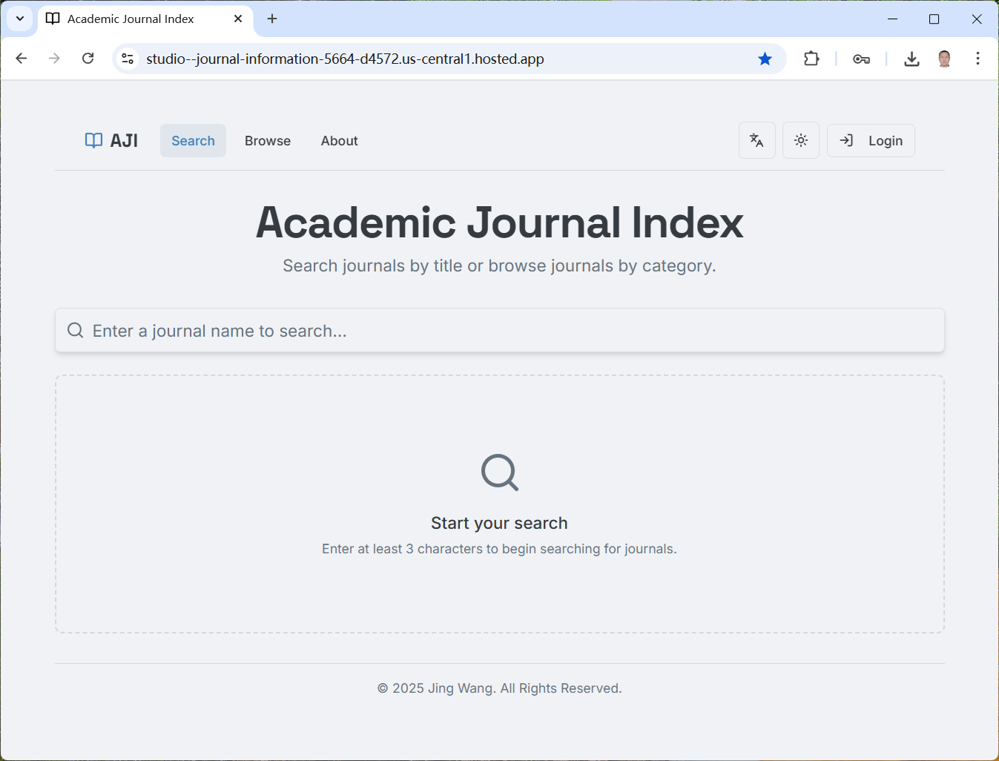

Home
Publications
Students
Resources
Basic Information
Research Interests: Parkinson's Disease, Neuroimaging, Machine Learning
Email: wangjing@xynu.edu.cn
Education and Work Experience
2018/11 - Present: Lecturer
School of Computer and Information Technology, Xinyang Normal University
2010/09 - 2018/06: Ph.D. in Biomedical Engineering
School of Biological Science and Medical Engineering, Southeast University
2012/09 - 2013/09: Visiting Student
State Key Laboratory of Cognitive Neuroscience and Learning, Beijing Normal University
2006/09 - 2010/06: B.S. in Biomedical Engineering
School of Biological Science and Medical Engineering, Southeast University
Publications
2025
Frontiers in Aging Neuroscience 17 (2025): 1687925
[Code]
Journal of Xinyang Normal University (Natural Science Edition) 38, no. 3 (2025): 297-303. (in Chinese)
[Code]
Symmetry 17, no. 2 (2025): 151
[Code]
PLoS One 20, no. 5 (2025): e0323281
[Code]
Brain Connectivity 15, no. 1 (2025): 3-18
2024
IAENG International Journal of Computer Science 51, no. 2 (2024): 104-114
[Code]
2022
Applied Sciences 12, no. 24 (2022): 12913
[Code]
Applied Sciences 12, no. 23 (2022): 11967
In International Conference on Neural Information Processing 1792, pp. 350-360. Singapore: Springer Nature Singapore, 2022
Journal of Xinyang Normal University (Natural Science Edition) 35, no. 3 (2022): 488-493. (in Chinese)
Fujian Computer 38, no. 4 (2022): 118-120. (in Chinese)
2021
In International Conference on Intelligent Control and Information Processing (ICICIP), pp. 416-421. IEEE, 2021
Journal of Xinyang Normal University (Natural Science Edition) 34, no. 4 (2021): 650-654. (in Chinese)
Applied Mathematical Modelling 96 (2021): 355-366
2020
Computer Research and Development 59 (04), 796-812. (in Chinese)
Human brain mapping 41, no. 13 (2020): 3620-3636
2018
Southeast University, Ph.D. Thesis, 2018. (in Chinese)
Frontiers in human neuroscience 12 (2018): 166
[Code]
2016
Frontiers in human neuroscience 10 (2016): 659
[Code]
In International Conference on Neural Information Processing 9949, pp. 131-139. Cham: Springer International Publishing, 2016
[Code]
2015
IEEE Transactions on Cybernetics 46, no. 3 (2015): 792-803
[Code]
2014
Biomedical Signal Processing and Control 10 (2014): 313-321
2013
Neural Networks 46 (2013): 190-198
[Code]
Patents
Jian Li, Xinhui Zhu, Yange Sun, Li Zhang, Jing Wang
China: CN113084803B. 2022. (in Chinese)
Jing Wang, Bao Zhang, Jian Li, Hejun Xuan, Yange Sun, Huaping Guo
China: CN111931595B. 2022. (in Chinese)
Students
Resources

